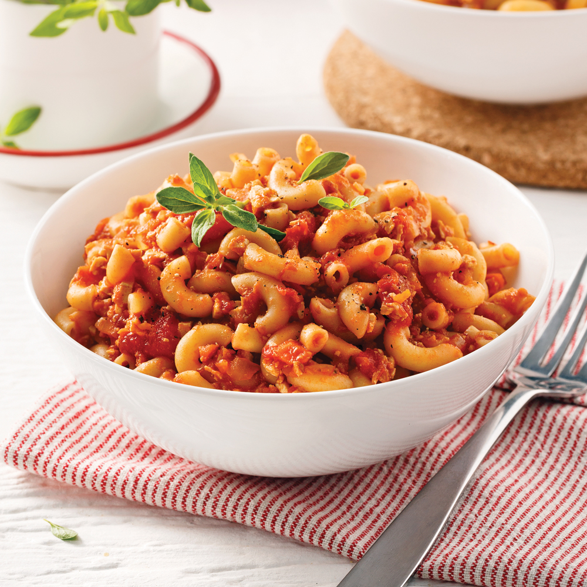

Macaroni végane

Ingrédients
- 1 bloc de tofu ferme de 454 g
- 2 branches de céleri
- 1 contenant de champignons de 227 g
- 2 carottes
- 30 ml (2 c. à soupe) d’ huile d’olive
- 2 oignons hachés
- 15 ml (1 c. à soupe) d’ ail haché
- 1 boîte de pâte de tomates de 156 ml
- 125 ml (1/2 tasse) de vin blanc
- 1 boîte de tomates en dés de 540 ml
- 1 boîte de tomates broyées de 796 ml
- 2 tiges de thym hachées
- 1 feuille de laurier
- 2 tiges d’origan hachées
- sel et poivre au goût
- 750 ml (3 tasses) de macaronis
Etapes
- Râper grossièrement le tofu.
- Dans le contenant du robot culinaire, hacher séparément le céleri, les champignons, puis les carottes.
- Dans une casserole, chauffer l’huile à feu moyen. Cuire les oignons et l’ail de 1 à 2 minutes.
- Ajouter le céleri, les champignons et les carottes. Cuire 2 minutes.
- Ajouter la pâte de tomates, le vin, les tomates en dés, les tomates broyées, les fines herbes et le tofu. Saler, poivrer et remuer. Porter à ébullition, puis laisser mijoter à feu doux 1 heure 30 minutes, en remuant fréquemment.
- Environ 10 minutes avant la fin de la cuisson de la sauce, cuire les pâtes al dente dans une casserole d’eau bouillante salée. Égoutter.
- Ajouter les pâtes dans la casserole contenant la sauce. Remuer. Répartir la préparation dans les assiettes.